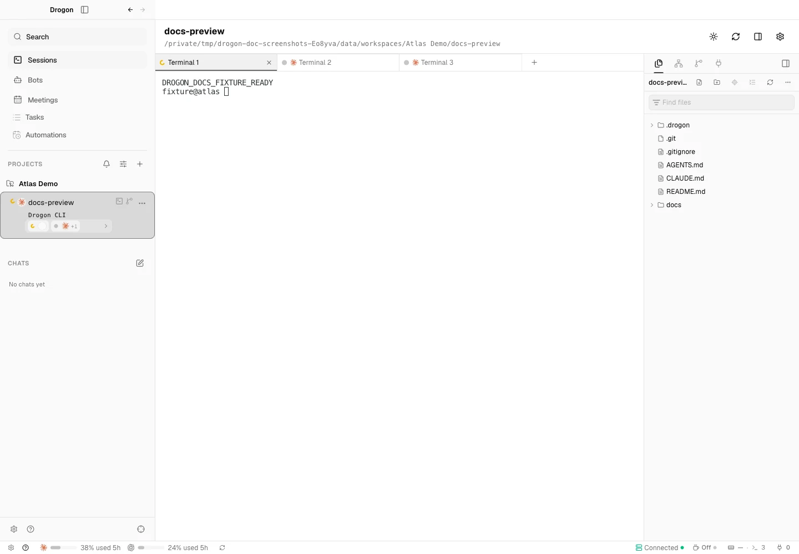
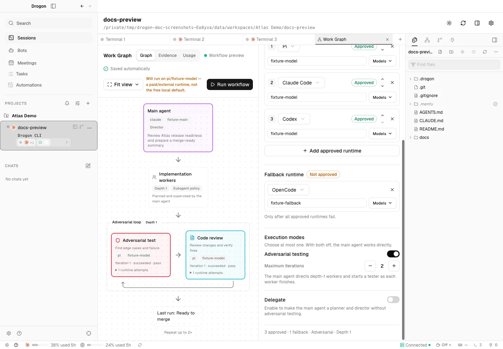
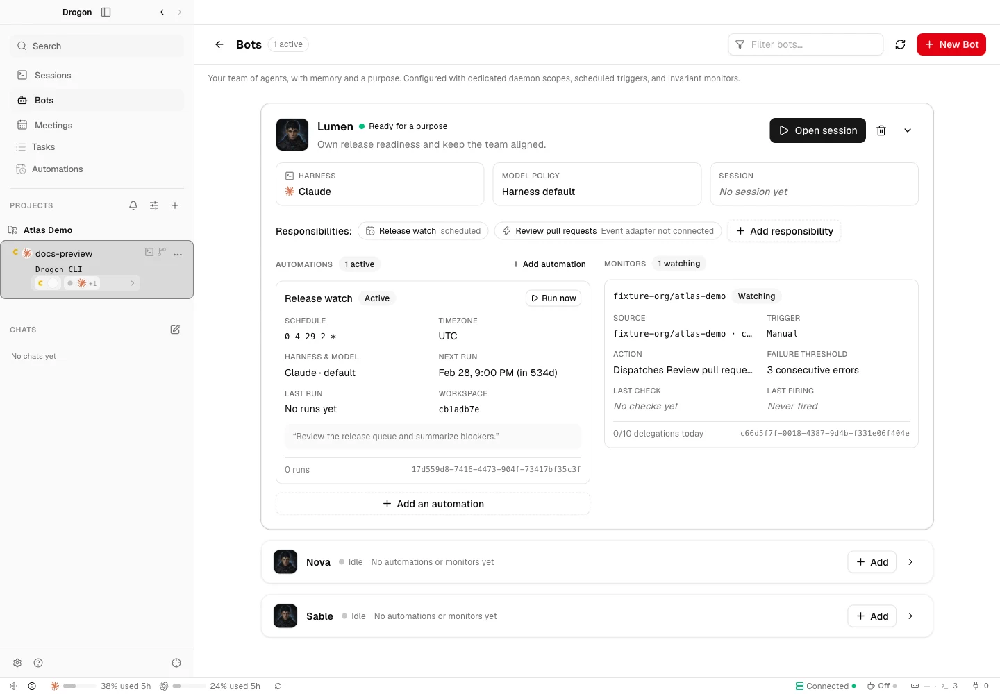

The session outlives the window.
A Rust daemon owns terminal sessions and workspace state. The Electron desktop is a view, not the lifetime of your work.
A workspace for agentic engineering
Give your agents room to build.
Keep the context, the controls, and the final call.
Open source, Rust core · Early preview
The workspace
Code, terminals, worktrees, and review in one place. Stay close to the work without micromanaging every step.

Isolate changes in Git worktrees. Keep coding sessions and files together, then review the diff where the work happened.

Choose approved runtimes and a bounded adversarial loop. Read attempts and verdicts on the graph, alongside the intent you set.

Give bots responsibilities and approved monitors. A watched pull request can open a worktree and start a review session.
Real product UI. Sample workspaces and fixture runtimes. Capture details ↗
The method
A prompt starts the work. Context, execution policy, and verification make it something you can review.
Drogon keeps human-authored intent separate from daemon-observed state. What you asked for and what actually happened should never be the same field.
Read the engineering notesIntent & context engineering
Put the task in its own workspace. Give agents a version-matched CLI guide and an explicit graph policy.
Orchestration & parallel work
Use isolated worktrees for parallel changes. Delegate to implementation workers under the runtime policy you choose.
Harness, backpressure & recovery
Bound the adversarial review loop. Record runtime attempts and verdicts. Try approved runtimes in order before the configured fallback.
Human orchestration
Inspect the changes and execution history. Keep approval of new bot watches and the decision to merge in human hands.
A Rust daemon owns terminal sessions and workspace state. The Electron desktop is a view, not the lifetime of your work.
Work with Claude Code, Pi, OpenCode, or a plain shell. Drogon organizes execution; your configured harness connects to its provider.
MIT-licensed. No app telemetry or automatic updater in the preview. Tests and reproducible build instructions live with the code.
Make room for the work
Drogon for macOS · Apple Silicon, macOS 14+
Get the macOS previewbrew tap clioo/drogon && brew install --cask clioo/drogon/drogonEarly preview, not a stable release. Ad-hoc signed and not notarized. Use a dedicated development profile and review the installation notes before running.